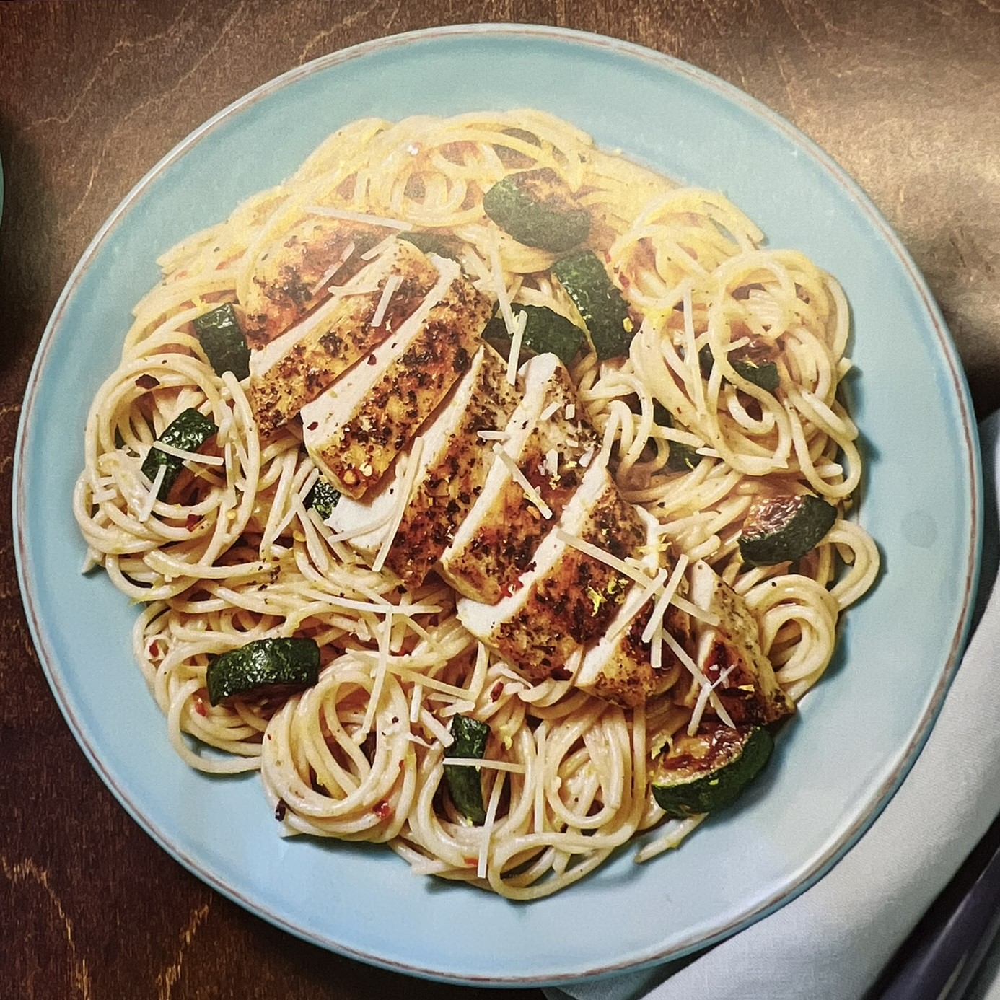

Lemony Chicken Spaghetti

Ingredients
- 2 tsp olive oil
- 2 tsp cooking oil
- 1 tbsp butter
- 1 zucchini, halved lengthwise and cut into 1/2 inch pieces
- 1 clove garlic, minced
- 1 lemon, zested and quartered
- 6 oz spaghetti
- 10 oz chicken cutlets, cut into slices or chunks
- 1 tbsp Italian seasoning
- 1 tsp chili flakes
- 1 cube chicken stock concentrate
- 2 tbsp sour cream
- 1/4 Parmesan cheese
- Salt and pepper to taste
Instructions
- Bring a large pot of water to a boil.
- Add spaghetti and cook 9-11 minutes.
- Reserve 1 cup pasta cooking water, then drain.
- While pasta cooks, heat olive oil in a large pan over medium-high, add zucchini and cook until zucchini is browned and softened, 4-6 minutes. Season with salt and pepper.
- Transfer zucchini to a plate and wipe out pan.
- Meanwhile, season chicken all over with Italian seasoning, salt and pepper.
- Once zucchini is done, heat a drizzle of cooking oil in same pan over medium-high heat. Add chicken and cook until browned and cooked through.
- Heat a drizzle of olive oil in pot used for spaghetti over medium-high heat. Add garlic, half the lemon zest and a pinch of chili flakes. Cook, stirring until fragrant, about 30 seconds.
- Stir in 1/2 cup reserved pasta cooking water, stock concentrate, and juice from two lemon wedges. Simmer until thickened, 1-2 minutes. Turn off heat.
- Add drained spaghetti, zucchini, sour cream, a 1 tbsp butter to pot with sauce, toss to coat.
- Add half the Parmesan and season with salt and pepper.
- Divide pasta between bowls, top with chicken, remaining Parmesan, remaining lemon zest, and a pinch of chili flakes. Serve with remaining lemon wedges on the side.